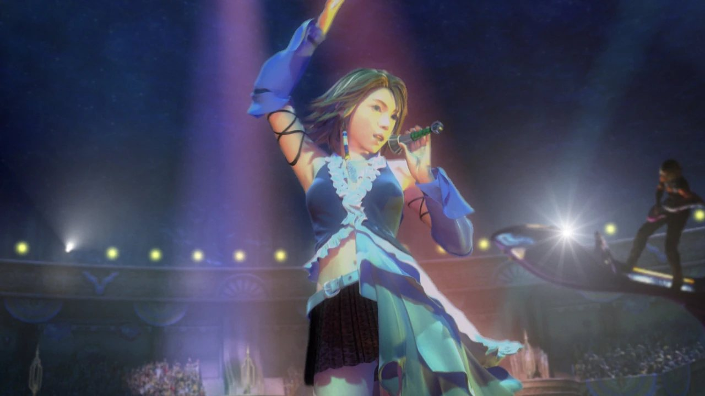
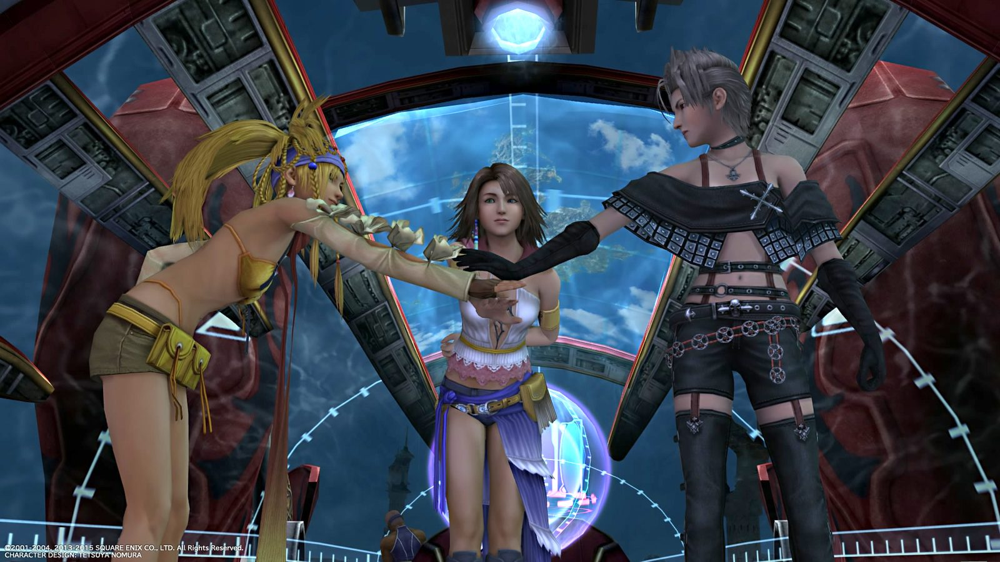
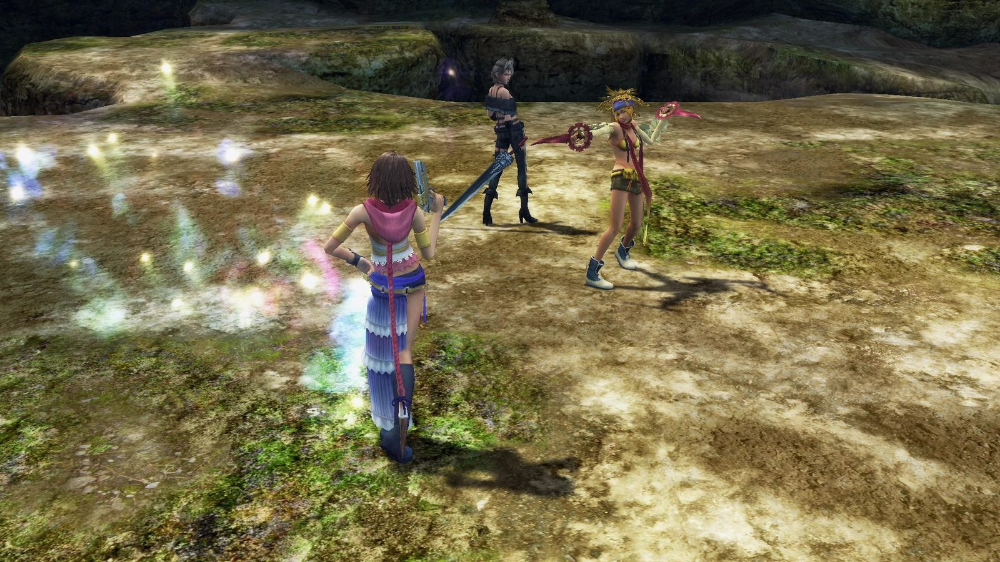
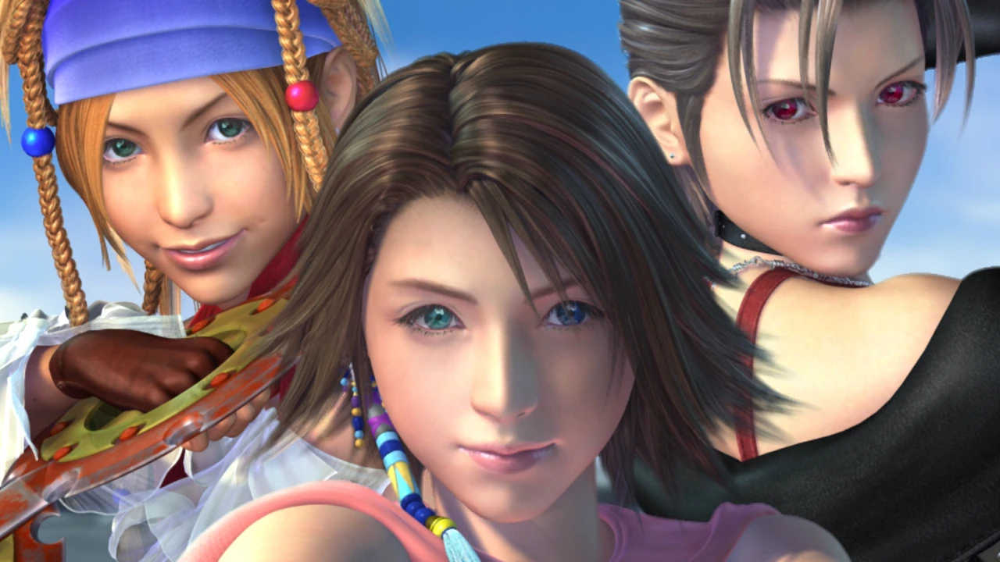

Tradução de fã · Gratuita · Steam e Steam Deck
Final Fantasy X-2, enfim em português do Brasil
A primeira tradução PT-BR do FFX-2 HD Remaster. São cerca de 35 mil falas traduzidas: história, batalhas, menus e a DLC Last Mission. Instala em minutos e não toca em nenhum arquivo original do jogo.
Código aberto no GitHub · Não afeta seus saves · Desinstalação 100% limpa

Uma nova aventura em Spira
Dois anos depois de Sin, Yuna troca o cajado de invocadora pela pistola de caçadora de esferas.
Cena da abertura de FINAL FANTASY X-2.
O que você vai jogar em português
Traduzido
- Todo o roteiro e os diálogos dos eventos (cerca de 35 mil falas)
- Falas, popups e tutoriais de batalha
- Menus, descrições de itens, habilidades, acessórios e da Grade de Vestes
- Bestiário completo (descrições do Scan)
- Telas de sistema do remaster: autosave, save/load, configurações
- A DLC Last Mission inteira
- Fonte corrigida para exibir ã e õ de verdade nos diálogos
Fica em inglês (de propósito)
Seguindo o padrão da tradução clássica do FFX, para manter a terminologia que a comunidade já conhece:
- Nomes de itens, habilidades e lugares (Potion, Garment Grid, Luca)
- Os rótulos do menu principal (Item, Ability, Equip), que vivem em arquivos Flash ainda não editáveis. As descrições dentro deles já estão em português
- Nas telas de boot e configuração, ã e õ aparecem como ä e ö (limitação da fonte dessas telas)
Honestidade acima de tudo: é assim que a tradução está hoje, na v1.0.
É seguro? Sim, e aqui está o porquê
O FFX-2 HD Remaster tem uma trava de integridade: se qualquer arquivo original for alterado, o launcher recusa iniciar com a mensagem "Broken game data". Por isso nunca existiu tradução dele.
Esta tradução contorna o problema sem tocar no jogo. Ela usa o External File Loader, um mod do modder ffgriever publicado no Nexus Mods, que carrega os arquivos traduzidos de uma pasta separada (data/mods) por cima dos originais, em tempo real, só na memória.
Na prática: nenhum arquivo original é modificado, seus saves continuam intactos e desinstalar é apagar meia dúzia de arquivos. O jogo volta a ser exatamente o que era.


Baixe a tradução
Antes de baixar, você precisa de:
- O jogo FINAL FANTASY X/X-2 HD Remaster original da Steam, atualizado
- Windows, ou Steam Deck / Linux rodando com Proton
- Cerca de 7 MB livres de espaço
Um clique, um assistente. Ele acha sozinho a pasta do jogo na Steam e instala tudo. Nenhum arquivo original é tocado.
Para Steam Deck, Linux, ou quem prefere copiar os arquivos na mão.
v1.0, publicada em julho de 2026. Gratuita para sempre. Código e arquivos abertos no GitHub.
Como instalar
No Windows, o instalador faz tudo por você em poucos cliques. No Steam Deck e no Linux, a instalação é manual. Escolha o seu sistema:
-
Baixe o instalador FFX2-Traducao-PTBR-Setup.exe no botão acima e abra ele. Se o Windows mostrar um aviso de segurança (por ser um programa novo), clique em Mais informações, depois Executar assim mesmo.
-
Siga as telas do assistente. Ele encontra sozinho a pasta do jogo na Steam. Se não encontrar, é só apontar a pasta manualmente quando ele pedir.
-
Pronto. Abra o jogo pela Steam e escolha FFX-2. Bem-vindo de volta a Spira.
Prefere instalar na mão? Instalação manual no Windows
-
Baixe o pacote manual (.zip) e encontre a pasta do jogo. Na Steam, clique com o botão direito em FINAL FANTASY X/X-2 HD Remaster, depois Gerenciar, depois Procurar arquivos locais.
C:\Program Files (x86)\Steam\steamapps\common\FINAL FANTASY FFX&FFX-2 HD Remaster -
Extraia o zip e copie TODO o conteúdo da pasta arquivos-do-jogo para dentro da pasta do jogo, ao lado do FFX-2.exe. Devem ficar na raiz: dinput8.dll, simpleLog.dll, hook.ini, a pasta modules e a pasta data. A pasta data já existe no jogo: apenas mescle, nada é substituído.
-
Abra o jogo pela Steam e escolha FFX-2.
-
Baixe o pacote manual (.zip) no botão acima. No Modo Desktop, encontre a pasta do jogo:
~/.local/share/Steam/steamapps/common/FINAL FANTASY FFX&FFX-2 HD Remaster/run/media/mmcblk0p1/steamapps/common/FINAL FANTASY FFX&FFX-2 HD Remaster -
Copie todo o conteúdo da pasta arquivos-do-jogo para dentro da pasta do jogo (idêntico ao passo 2 do Windows manual).
-
Passo extra obrigatório: autorize o Wine a carregar o loader. Na Steam: botão direito no jogo, Propriedades, Opções de Inicialização, e cole:
WINEDLLOVERRIDES="dinput8=n,b" %command%Se já houver algo escrito ali, adicione o WINEDLLOVERRIDES antes do %command% existente.
-
Abra o jogo pela Steam e escolha FFX-2.
Deu certo?
O launcher abre sem a mensagem "Broken game data". Um arquivo hook.log aparece na pasta do jogo. Menus, diálogos e batalhas em português. Bem-vindo de volta a Spira.
Preciso do jogo original?
Sim. A tradução não inclui o jogo: você precisa do FINAL FANTASY X/X-2 HD Remaster original da Steam, atualizado. A tradução é gratuita e não pode ser vendida.
Funciona no Steam Deck?
Sim, perfeitamente, via Proton. Só não pule o passo do WINEDLLOVERRIDES no tutorial: sem ele o Wine ignora o loader e o jogo abre em inglês.
Apareceu "Broken game data". E agora?
Algum arquivo original foi substituído por engano. Verifique a integridade dos arquivos pela Steam (Propriedades, Arquivos Instalados, Verificar integridade) e refaça a instalação. Este pacote não substitui nenhum arquivo original.
O jogo abriu em inglês. E agora?
No Windows, confira se a dinput8.dll está na mesma pasta do FFX-2.exe (e não dentro de uma subpasta). No Steam Deck, confira o WINEDLLOVERRIDES. Confira também se existe data/mods/ffx-2_data dentro da pasta do jogo.
Afeta meus saves ou o FFX-1?
Não e não. Saves continuam intactos, e o FFX-1 da coletânea não é tocado (a tradução só contém arquivos do X-2). Para jogar o FFX-1 em português, use o patch da Central de Traduções.
Para remover: use Desinstalar um programa no Windows, ou apague da pasta do jogo dinput8.dll, simpleLog.dll, hook.ini, hook.log, a pasta modules e a pasta data/mods. No Steam Deck, remova também a opção de inicialização. Nada do jogo original foi alterado, então isso restaura 100%.
A história por trás desta tradução
2002
O ano era 2002. Meu pai tinha uma locadora na nossa cidade: fitas de vídeo nas prateleiras, um PlayStation 1 e um Nintendo 64 ligados nas TVs do fundo. Num certo dia, resolvemos apostar alto: compramos, usado, por mil reais, o primeiro PlayStation 2 da cidade.
Formava fila na porta. Cada sessão durava uma hora e meia, e tinha gente que pagava só para ficar em pé atrás do sofá, assistindo. Ninguém ali tinha visto um gráfico daquele na vida. Nosso primeiro jogo original foi justamente ele: Final Fantasy X.
Joguei por meses, encantado, sem entender uma palavra de inglês. Cheguei até a porta da batalha final. E parei ali. A locadora fechou, a vida seguiu, e aquele save ficou para trás, congelado a uma luta do fim.

2026
Vinte e quatro anos depois, voltei a Spira. Rejoguei o Final Fantasy X inteiro, agora em português, com a tradução da Central de Traduções, e finalmente vi o final que o garoto de 2002 não viu. No dia seguinte, emendei no X-2. E descobri que ele nunca tinha ganhado uma tradução: o jogo trava na inicialização se qualquer arquivo original for modificado, e isso afastou todo mundo por anos.
Então resolvi fazer. Estudei como a tradução do FFX foi construída, entendi como servir os textos traduzidos por fora, sem encostar em nenhum arquivo do jogo, e traduzi o X-2 inteiro: cada diálogo, cada batalha, cada descrição de item. O resultado está nesta página, de graça, para qualquer pessoa que queira ouvir essa história em português.
Carlos Alexandre de Oliveira
Como foi feita
A tradução foi construída em parceria com o Claude (Fable 5), o modelo mais avançado da assinatura Max de 200 dólares da Anthropic, com acesso cedido por um amigo desenvolvedor de jogos de grande relevância no mercado mobile, que acreditou no projeto. Foram meses de trabalho entre engenharia reversa dos formatos do jogo, tradução das cerca de 35 mil falas e revisão, mantendo a terminologia consagrada pela tradução do FFX.
Comece pelo Final Fantasy X
Nada disso existiria sem a monumental tradução do Final Fantasy X feita, no braço, pela Central de Traduções. Foi ela que me fez terminar o X depois de 24 anos, que definiu a terminologia que respeito aqui no X-2, e que provou que dava para trazer Spira inteira para o português. Se você ainda não jogou o X traduzido, comece por lá: é trabalho de gente que ama isso tanto quanto a gente.
Pague um café para o tradutor ☕
Esta tradução é e sempre será gratuita. Mas se ela te devolveu um pedaço de 2002, um café ajuda a financiar as próximas: cada doação vira hora de trabalho em outra tradução.
Doações via PIX em breve. Enquanto isso, deixe uma estrela no GitHub: também vale muito.
Chave em nome de Carlos Alexandre de Oliveira.
Qual jogo merece a próxima tradução?
O plano é não parar no X-2. Doações e sugestões decidem o rumo: diga qual jogo você quer ver em português e vote nas ideias da comunidade.
Sugerir e votar no GitHubComentários e feedback
Funcionou? Achou um erro de tradução? Jogou em 2002 também? Deixe seu recado. Os comentários usam sua conta do GitHub, então chegam direto até mim.
Prefere abrir uma conversa? Use as Discussions do projeto.